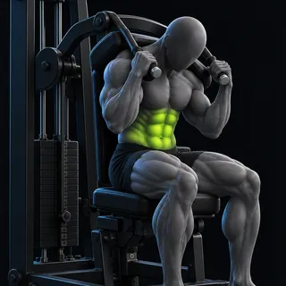
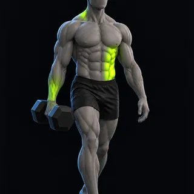
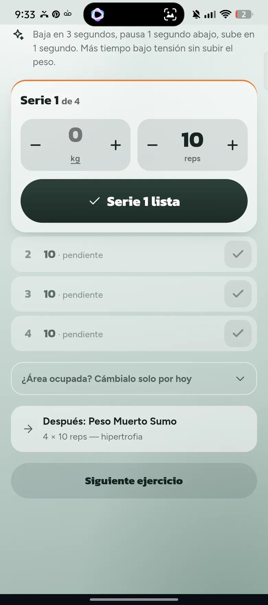
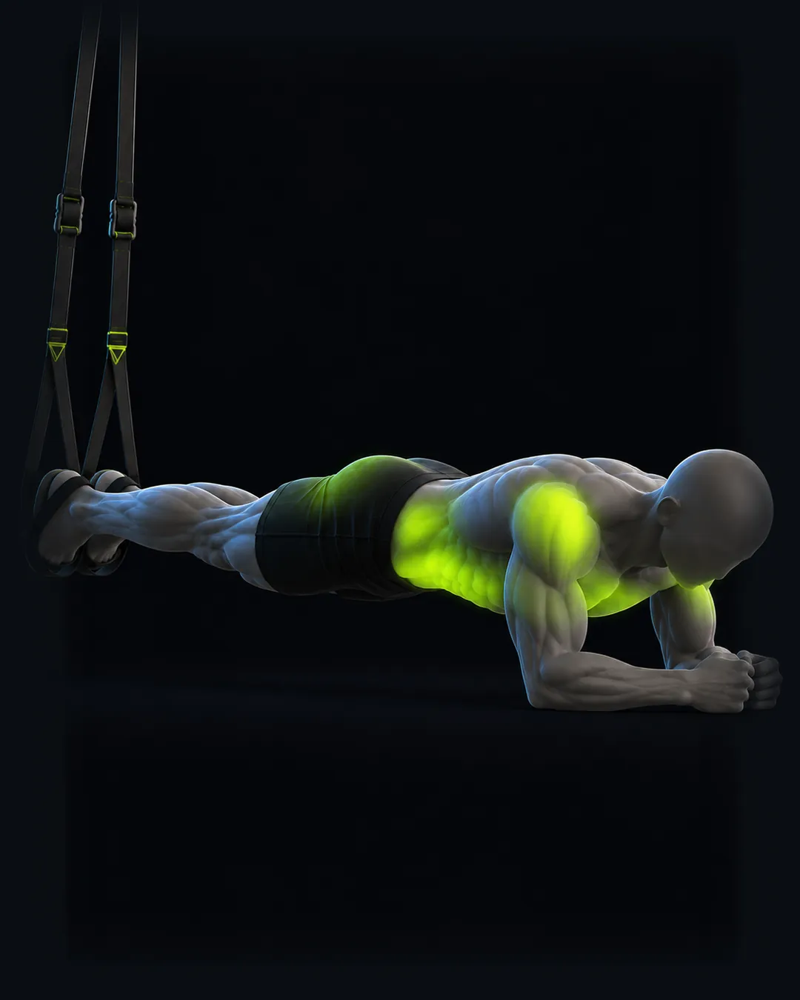
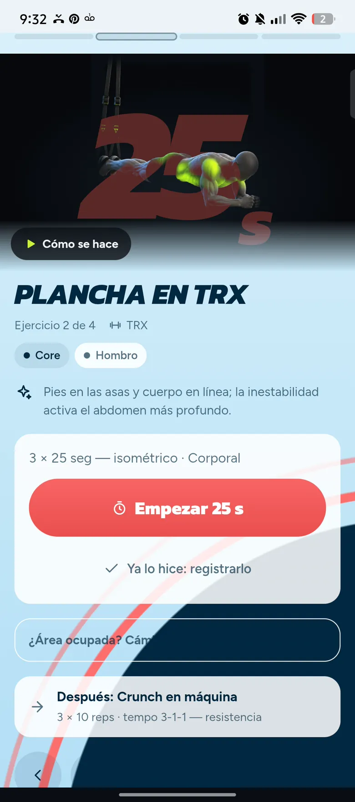
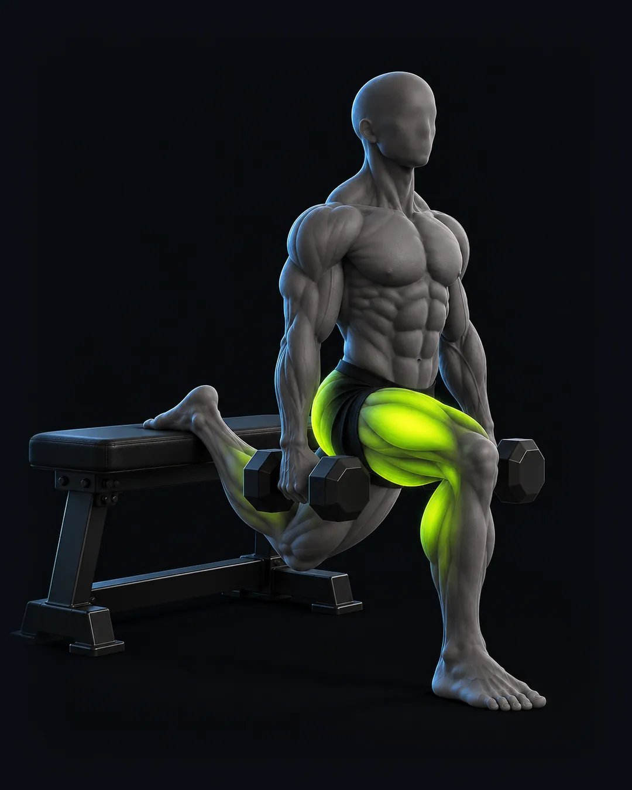
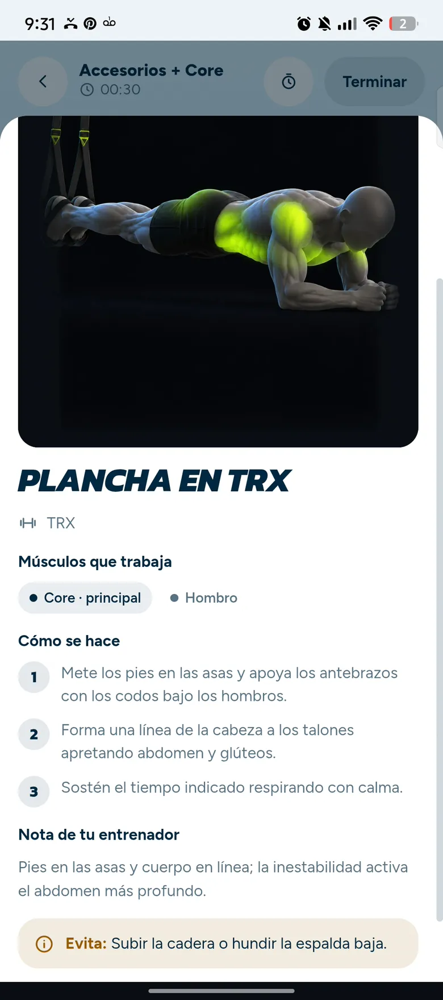
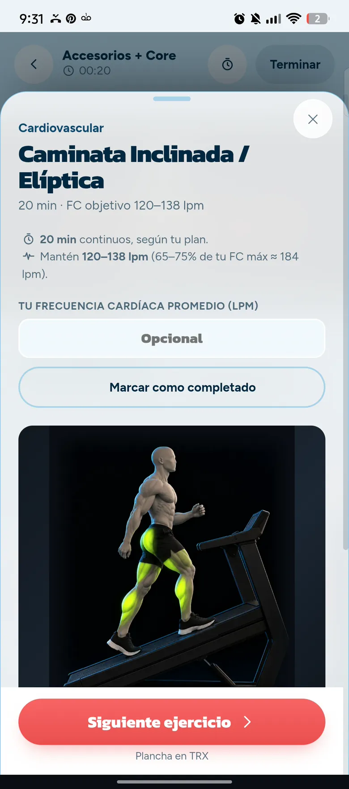

Serie de fuerzaTema Salvia
Pierna y glúteo12:40





 Primera vez
Primera vez
Crunch en máquina
4 × 10 · descanso 60 s · tempo 3-1-1
Serie 1 de 4
—anota tus kg
10reps
DespuésPeso muerto sumo
9:33

- Las tres filas “10 · pendiente” se vuelven cuatro puntos. “¿Área ocupada?” es un ícono en la foto.
- El peso en 0 ahora dice “anota tus kg”: un 0 gris parecía un dato.
- El avance son miniaturas de los ejercicios, no barras genéricas.
Plancha con tiempoTema Claro
Accesorios + core04:12

Plancha en TRX
3 × 25 s · descanso 45 s · TRX
Serie 1 de 3
Después
Crunch en máquina
Crunch en máquina
9:32

- Hoy el “25 s” rojo se pinta encima de la figura. Ahora el “25 s” fantasma queda abajo y la plancha se ve completa.
- Hoy la foto se funde con el azul claro y se ve neblinosa. Ahora se queda en su tarjeta negra, igual que en el tema oscuro.
Ficha de técnicaTema Claro · al tocar “Técnica”

CuádricepsGlúteo
Sentadilla búlgara
Banca y mancuernas
- Apoya el empeine del pie de atrás en la banca.
- Baja recto hasta que la rodilla de atrás casi toque el piso.
- Sube empujando con el pie de adelante.
Que la rodilla de adelante se vaya hacia adentro.
L
Luis, tu entrenadorPeso en el talón de la pierna de adelante; siente el glúteo.
9:31

- Sin los títulos “Músculos que trabaja”, “Cómo se hace” y “Nota de tu entrenador”: los músculos van sobre la foto, con el verde de la imagen.
- Los pasos se leen como una secuencia y el error común se marca con una X roja.
- La nota es un mensaje de tu entrenador, con su inicial y su nombre.
Registro de cardioTema Salvia · al terminar el tiempo

20:00Caminata inclinada lista
¿A qué ritmo fuiste?opcional
128latidos por minuto
128
SuaveTu meta: 120–138Fuerte
9:31

- Hoy son tres párrafos, un campo “Opcional” y dos botones. Ahora: “20:00 · lista”, un control de latidos y un botón.
- Una barra muestra si quedaste en tu zona (120–138), en lugar de explicarlo con texto.